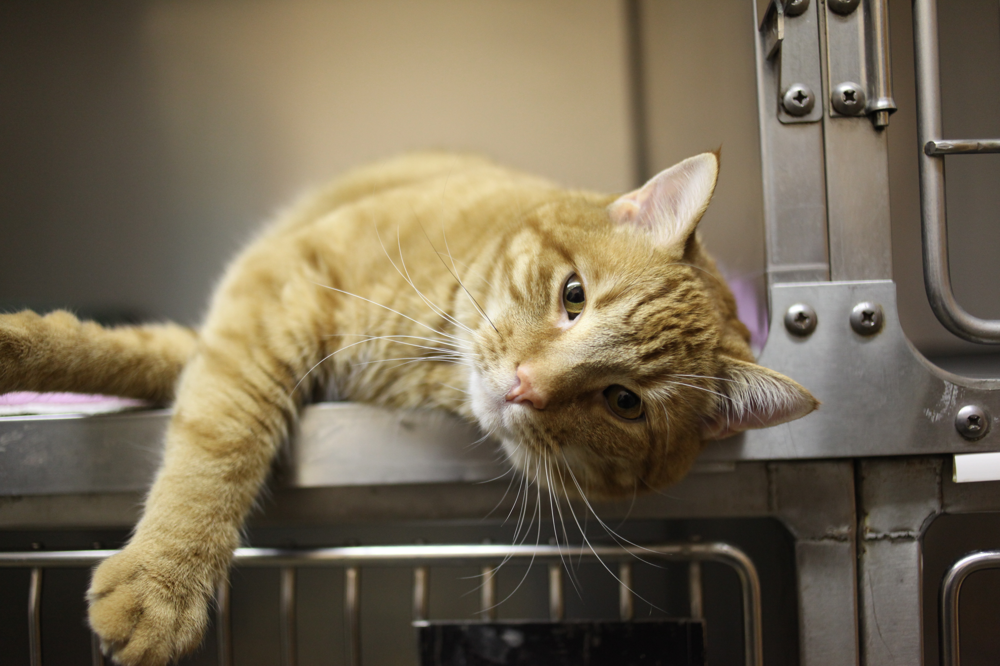

A Day in the Life of a Veterinarian or a VET doctor!!
Healing Paws, Saving Lives — One Animal at a Time.
Morning Routine
The day of a veterinarian often begins early— usually around 7:00 to 8:00 AM. I imagine waking up, wearing my clean medical scrubs and lab coat, with a stethoscope around my neck and my name embroidered on the pocket.
Before heading to work, I’d check my schedule to see which animals I’ll be seeing that day. Once I arrive at the veterinary clinic, the environment feels both professional and comforting— filled with the faint scent of antiseptic, soft animal noises, and the warmth of caring staff.
A typical morning might begin with routine check-ups for pets like vaccinations, dental cleanings, and physical exams. In larger facilities or animal hospitals, veterinarians may also assist in emergency cases such as injured animals or pets showing sudden illness.
By midday, a veterinarian’s day gets busy! Most vets balance between medical, surgical, and administrative duties. Some common tasks include:
Performing surgeries (spaying, neutering, or wound treatment)
Conducting diagnostic tests like X-rays or blood tests
Writing prescriptions and explaining medications to pet owners
Communicating with veterinary technicians and assistants
Entering patient data and updating medical records
Veterinarians use important tools such as stethoscopes, thermometers, X-ray machines, syringes, surgical tools, computers, and tablets. Aside from working in clinics, some vets also visit farms or animal shelters to care for livestock or rescued animals.
Skills used: Compassion, medical knowledge, communication, and teamwork.

Career Highlight Video
This video shows something interesting about my dream job:
Here, you will see how veterinarians care for animals in many ways— from routine exams to emergency surgeries. It shows the compassion, responsibility, and expertise required in treating all kinds of animals, whether small pets or large livestock. Teamwork is also important — with vet nurses and technicians assisting in operations and comforting both animals and their owners.
A Story from My Dream Job
One of the most inspiring real-life stories I found was about Dr. Kwane Stewart, known as “The Street Vet.” He spends his time helping homeless people’s pets by giving them free medical care right on the streets.
He treats animals suffering from infections, malnutrition, or injuries— all out of compassion and a deep love for animals. His story reminds me that being a veterinarian is not just a career, but a calling to serve and heal those who cannot speak for themselves.
This moment shows how a vet’s work can change lives— both animal and human alike.
.jpeg)